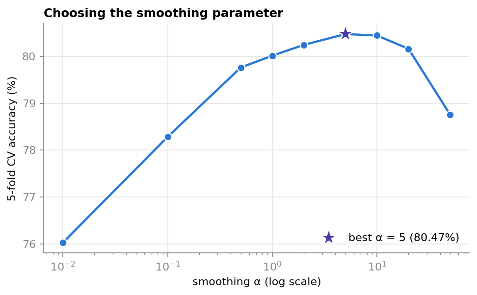
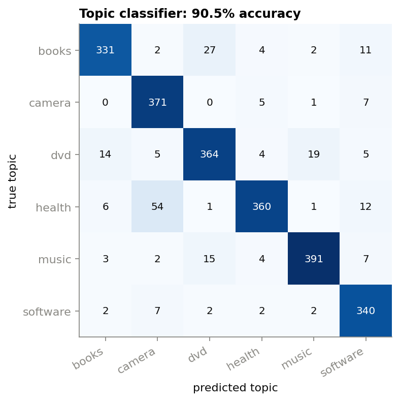
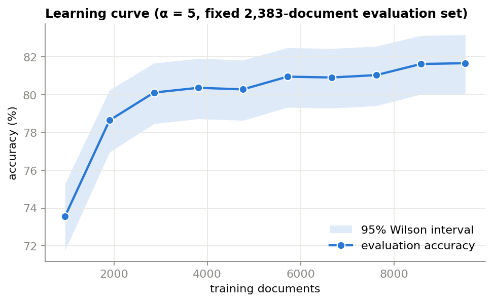
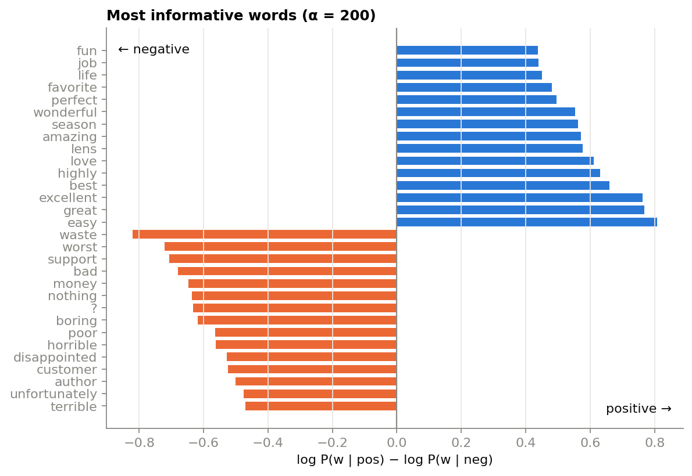
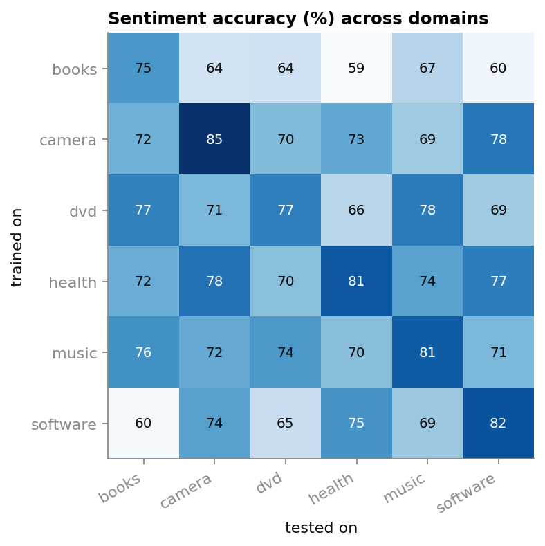

Coursework / SYDE 572, Pattern Recognition / Assignment 4
Assignment 4: Text Classification with Naive Bayes
A multinomial Naive Bayes sentiment classifier, written from scratch, for 11,914 product reviews from Blitzer et al. (2007), covering six topics: books, camera, dvd, health, music and software.
Model and training
Split. The first 80% of the (pre-shuffled) file is the training set: 9,531 documents. The remaining 2,383 documents are the evaluation set.
Model. A document \(d = (w_1, \dots, w_n)\) and label \(c\) are scored with log probabilities:
\[ \log P(c, d) = \log P(c) + \sum_{i=1}^{n} \log P(w_i \mid c), \qquad P(w \mid c) = \frac{N_{c,w} + \alpha}{N_c + \alpha V}, \]where \(N_{c,w}\) counts word \(w\) in class \(c\), \(N_c\) is the total word count of class \(c\), and \(V = 52{,}392\) is the training vocabulary size. train_nb stores one Counter per class plus the class log priors, so \(\alpha\) can change without retraining. A word never seen in training gets \(\alpha / (N_c + \alpha V)\) in both classes, so it barely affects the decision. The classifier returns \(\arg\max_c \log P(c, d)\).
Smoothing. \(\alpha\) was chosen by 5-fold cross-validation on the training set only. Accuracy is flat from 1 to 10 and peaks at \(\alpha = 5\).

Sanity checks
| Document | \(P(\text{pos}, d)\) | \(P(\text{neg}, d)\) |
|---|---|---|
| great | 0.00104 | 0.00042 |
| bad | 0.00014 | 0.00036 |
['a', 'top-quality', 'performance'] does not crash: "top-quality" is unseen and simply gets the smoothed probability (log scores −25.46 pos, −26.12 neg).
| Document | great | bad | not good | waste of money | highly recommend | not bad |
|---|---|---|---|---|---|---|
classify_nb | pos | neg | neg | neg | pos | neg |
| \(P(\text{pos} \mid d)\) | 0.71 | 0.28 | 0.43 | 0.04 | 0.87 | 0.20 |
All as expected except "not bad". A bag of words cannot see that "not" flips "bad"; see feature improvements.
Evaluation
| Predicted pos | Predicted neg | |
|---|---|---|
| True pos (1,153) | 901 | 252 |
| True neg (1,230) | 185 | 1,045 |
Accuracy = 1,946 / 2,383 = 81.66%. The 95% Wilson confidence interval is [80.06%, 83.16%], i.e. the interval for a binomial proportion with \(n = 2{,}383\):
\[ \frac{\hat p + \frac{z^2}{2n} \pm z\sqrt{\frac{\hat p(1-\hat p)}{n} + \frac{z^2}{4n^2}}}{1 + \frac{z^2}{n}}, \quad z = 1.96. \]By topic: camera 86.7%, music 82.2%, dvd 81.0%, books 80.9%, software 80.0%, health 79.3%.
Error analysis
Misclassified evaluation documents of at most 60 words, ranked by how confident the wrong prediction was:
| True → predicted | \(P\)(wrong) | Review (abridged) |
|---|---|---|
| neg → pos | 0.9999 | "this bag is very small . my canon 20d fits nicely with a small lens , but you cannot fit more than one lens …" |
| neg → pos | 0.9996 | "… relive the wonder of archie bunker where each episode provides laughs … brilliantly cast … 24 episodes of absolute delight await you" |
| pos → neg | 0.9973 | "… h&r block 's tax cut software to be simple to use to process an otherwise complex tax return . i would recommend it …" |
| pos → neg | 0.9983 | "i saw this film … really enjoyed it , but … is this the correct aspect ratio ? i hate to buy a botched pan / scan version … ? ? ? ? ? ?" |
- Topic words act as sentiment. The camera bag complaint is mild, while "canon", "lens" and "fits nicely" all lean positive, because camera reviews in this data use them mostly in praise. The tax software review is lost to "tax return": "return" is a strong negative word (returning a product), here used in another sense.
- Off-topic or neutral text. The aspect-ratio review is a question, not an opinion. "?", "hate" and "botched" are all negative cues, although the stated sentiment ("really enjoyed it") is positive.
- Label noise. The Archie Bunker review is plainly enthusiastic but labelled negative. No bag-of-words model can get it right, and some of the remaining 18% error is of this kind.
Optional tasks
Six-category topic classifier
The same train_nb, with the topic column (index 0) as label and \(\alpha = 1\); no code changes were needed since the classes are not hard-coded. Accuracy is 90.5% (95% CI [89.3%, 91.6%]).

Learning curve

Informative features
print_top_nb ranks each word by the log-likelihood ratio \(\log P(w \mid \text{pos}) - \log P(w \mid \text{neg})\). With \(\alpha = 5\), the top of the list is names that happen to occur in only one class: pluto (60 pos, 0 neg), keaton, buffy, seagal (0 pos, 41 neg), roxio. A large \(\alpha = 200\) adds 200 pseudo-counts to every word, which pulls these moderate-count ratios toward 0, so frequent, consistently polar words rise to the top.

Improving the features, and scikit-learn
The same Naive Bayes model (\(\alpha = 5\)) was trained on modified tokens. Negation marking follows Pang et al.: every token after a negation word (not, no, never, n't, …) is prefixed with NOT_ until the next punctuation mark. Bigrams add every adjacent word pair as an extra token. Each variant is compared with the baseline by McNemar's exact test on the documents where exactly one of the two classifiers is right.
| Classifier | Accuracy | 95% CI | Only new right / only baseline right | McNemar \(p\) |
|---|---|---|---|---|
| NB, unigrams (baseline) | 81.66% | [80.1, 83.2] | ||
| NB, negation marking | 80.40% | [78.8, 81.9] | 103 / 133 | 0.059 |
| NB, unigrams + bigrams | 85.35% | [83.9, 86.7] | 128 / 40 | \(6 \times 10^{-12}\) |
| NB, negation + bigrams | 85.14% | [83.7, 86.5] | 161 / 78 | \(8 \times 10^{-8}\) |
| scikit-learn TF-IDF + LinearSVC | 85.23% | [83.7, 86.6] | 200 / 115 | \(2 \times 10^{-6}\) |
- Bigrams help significantly (+3.7 points). Pairs such as "not_bad", "waste_of" and "highly_recommend" capture short-range negation and phrases.
- Negation marking alone does not help (−1.3 points, not significant). Prefixing every word up to the next punctuation mark doubles the vocabulary and splits the counts for common words, which hurts more than the fixed negations help.
- NB with bigrams matches the LinearSVC (McNemar \(p = 0.96\), 159 vs 157 discordant documents), while unigram NB is significantly worse than the SVM.
Domain sensitivity
Each topic was split 80/20 on its own, and a sentiment classifier trained on one topic was tested on every topic's evaluation part. Camera → books: 71.8%, versus 74.8% for a books-trained classifier, a 3-point drop. Books → camera: 64.0%, versus 85.3% in-domain, a 21-point drop.

The drop is asymmetric. Book reviews talk about plot and authors, words that are useless for cameras. Camera reviews use generic product words (works, easy, return, waste) that carry over to books reasonably well.
Naive Bayes for numerical data
For Iris, the word probabilities are replaced by one Gaussian per class and feature (12 in total), with maximum-likelihood means and variances. The score becomes
\[ \log P(c) + \sum_{j=1}^{4} \left[ -\tfrac{1}{2}\log(2\pi\sigma_{cj}^2) - \frac{(x_j - \mu_{cj})^2}{2\sigma_{cj}^2} \right]. \]Over 100 random 110/40 splits, accuracy is 95.4% ± 3.3%, identical on every split to scikit-learn's GaussianNB.
Code
nb.py contains the from-scratch classifier and the required functions (train_nb, score_doc_label, classify_nb, classify_documents, accuracy), the statistics, and the optional tasks. scikit-learn appears only in train_sklearn and as the GaussianNB reference. Running it reproduces the required results; experiments.py produces every number on this page.
nb.py
import os
from collections import Counter
import numpy as np
from scipy.stats import binomtest
DATA = os.path.join(os.path.dirname(os.path.abspath(__file__)), "..", "all_sentiment_shuffled.txt")
ALPHAS = [0.01, 0.1, 0.5, 1, 2, 5, 10, 20, 50]
NEGATIONS = {"not", "no", "never", "n't", "cannot", "nothing", "nobody", "none", "nor", "without"}
PUNCT = {".", ",", "!", "?", ";", ":"}
# ---------- data ----------
def read_documents(doc_file=DATA, label_col=1):
docs, labels = [], []
with open(doc_file, encoding="utf-8") as f:
for line in f:
words = line.strip().split()
docs.append(words[3:])
labels.append(words[label_col])
return docs, labels
def split(docs, labels, frac=0.8):
k = int(frac * len(docs))
return docs[:k], labels[:k], docs[k:], labels[k:]
# ---------- Naive Bayes (multinomial, additive smoothing) ----------
def train_nb(documents, labels, alpha=1.0):
classes = sorted(set(labels))
counts = {c: Counter() for c in classes}
for doc, c in zip(documents, labels):
counts[c].update(doc)
vocab = set().union(*counts.values())
n = Counter(labels)
return dict(classes=classes, counts=counts, totals={c: sum(counts[c].values()) for c in classes},
V=len(vocab), alpha=alpha, log_prior={c: np.log(n[c] / len(labels)) for c in classes})
def with_alpha(model, alpha):
return {**model, "alpha": alpha}
def log_p_word(w, c, model):
a = model["alpha"]
return np.log((model["counts"][c][w] + a) / (model["totals"][c] + a * model["V"]))
def score_doc_label(document, label, model):
return model["log_prior"][label] + sum(log_p_word(w, label, model) for w in document)
def classify_nb(document, model):
return max(model["classes"], key=lambda c: score_doc_label(document, c, model))
def classify_documents(docs, model):
return [classify_nb(d, model) for d in docs]
def accuracy(true_labels, guessed_labels):
return np.mean([t == g for t, g in zip(true_labels, guessed_labels)])
def posterior(document, model):
s = np.array([score_doc_label(document, c, model) for c in model["classes"]])
return dict(zip(model["classes"], np.exp(s - np.logaddexp.reduce(s))))
# ---------- statistics ----------
def wilson(acc, n, z=1.96):
centre = (acc + z * z / (2 * n)) / (1 + z * z / n)
half = z * np.sqrt(acc * (1 - acc) / n + z * z / (4 * n * n)) / (1 + z * z / n)
return centre - half, centre + half
def mcnemar(true, a, b):
a_only = sum(x == t != y for t, x, y in zip(true, a, b))
b_only = sum(y == t != x for t, x, y in zip(true, a, b))
return a_only, b_only, binomtest(a_only, a_only + b_only).pvalue if a_only + b_only else 1.0
def cv_alpha(docs, labels, alphas=ALPHAS, k=5):
folds = np.array_split(np.arange(len(docs)), k)
acc = np.zeros((len(alphas), k))
for j, val in enumerate(folds):
tr = np.setdiff1d(np.arange(len(docs)), val)
model = train_nb([docs[i] for i in tr], [labels[i] for i in tr])
for i, a in enumerate(alphas):
acc[i, j] = accuracy([labels[v] for v in val], classify_documents([docs[v] for v in val], with_alpha(model, a)))
return acc.mean(1)
# ---------- optional tasks ----------
def print_top_nb(k, model, min_count=0):
pos, neg = model["classes"][1], model["classes"][0]
words = [w for w in set(model["counts"][pos]) | set(model["counts"][neg])
if model["counts"][pos][w] + model["counts"][neg][w] >= min_count]
lr = {w: log_p_word(w, pos, model) - log_p_word(w, neg, model) for w in words}
ranked = sorted(lr, key=lr.get)
top_pos, top_neg = ranked[::-1][:k], ranked[:k]
print(f"{pos}:", ", ".join(top_pos))
print(f"{neg}:", ", ".join(top_neg))
return [(w, lr[w]) for w in top_pos], [(w, lr[w]) for w in top_neg]
def learning_curve(train_docs, train_labels, eval_docs, eval_labels, alpha, fracs=np.arange(0.1, 1.01, 0.1)):
out = []
for f in fracs:
n = int(f * len(train_docs))
model = train_nb(train_docs[:n], train_labels[:n], alpha)
out.append((n, accuracy(eval_labels, classify_documents(eval_docs, model))))
return out
def mark_negation(doc):
out, neg = [], False
for w in doc:
if w in PUNCT:
neg = False
out.append(w)
else:
out.append("NOT_" + w if neg else w)
if w in NEGATIONS or w.endswith("n't"):
neg = True
return out
def add_bigrams(doc):
return doc + [a + "_" + b for a, b in zip(doc, doc[1:])]
def domain_matrix(docs, labels, topics, domains, alpha):
data = {}
for d in domains:
idx = [i for i, t in enumerate(topics) if t == d]
data[d] = split([docs[i] for i in idx], [labels[i] for i in idx])
acc = {}
for src in domains:
model = train_nb(data[src][0], data[src][1], alpha)
for dst in domains:
acc[src, dst] = accuracy(data[dst][3], classify_documents(data[dst][2], model))
return acc
def train_sklearn(docs, labels):
from sklearn.feature_extraction.text import TfidfVectorizer
from sklearn.pipeline import make_pipeline
from sklearn.svm import LinearSVC
vec = TfidfVectorizer(preprocessor=lambda x: x, tokenizer=lambda x: x, token_pattern=None)
return make_pipeline(vec, LinearSVC()).fit(docs, labels)
# ---------- Gaussian Naive Bayes for numerical data ----------
def train_gnb(X, y):
classes = sorted(set(y))
y = np.asarray(y)
return dict(classes=classes,
log_prior={c: np.log(np.mean(y == c)) for c in classes},
mean={c: X[y == c].mean(0) for c in classes},
var={c: X[y == c].var(0) for c in classes}) # maximum likelihood (divide by n)
def score_gnb(x, c, model):
m, v = model["mean"][c], model["var"][c]
return model["log_prior"][c] + np.sum(-0.5 * np.log(2 * np.pi * v) - (x - m) ** 2 / (2 * v))
def classify_gnb(X, model):
return [max(model["classes"], key=lambda c: score_gnb(x, c, model)) for x in X]
if __name__ == "__main__":
all_docs, all_labels = read_documents()
train_docs, train_labels, eval_docs, eval_labels = split(all_docs, all_labels)
print(f"{len(train_docs)} training, {len(eval_docs)} evaluation documents")
cv = cv_alpha(train_docs, train_labels)
alpha = ALPHAS[int(np.argmax(cv))]
print("5-fold CV accuracy by alpha:", dict(zip(ALPHAS, cv.round(4))), "-> alpha =", alpha)
model = train_nb(train_docs, train_labels, alpha)
for w in ["great", "bad"]:
print(f"sanity 1 [{w}]:", {c: f"{np.exp(score_doc_label([w], c, model)):.5f}" for c in model["classes"]})
print("sanity 2:", {c: round(score_doc_label(["a", "top-quality", "performance"], c, model), 3) for c in model["classes"]})
for d in (["great"], ["bad"], ["not", "good"], ["waste", "of", "money"], ["highly", "recommend"]):
print(" classify", d, "->", classify_nb(d, model))
guesses = classify_documents(eval_docs, model)
acc = accuracy(eval_labels, guesses)
print(f"accuracy {acc:.4f}, 95% Wilson CI {wilson(acc, len(eval_docs))}")Download nb.py · experiments.py · plots.py (produces every figure on this page)